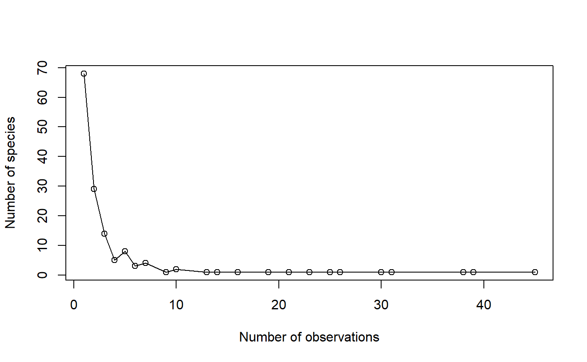

AbdFreqCount.RdCounts the number of species observed the same number of times.
AbdFreqCount(Ns, Level = NULL, Estimator = "Best", CheckArguments = TRUE)
| Ns | A numeric vector containing species abundances. |
|---|---|
| Level | The level of interpolation or extrapolation. It may be an a chosen sample size (an integer) or a sample coverage (a number between 0 and 1). |
| Estimator | A string containing one of the possible estimators (ignored if |
| CheckArguments | Logical; if |
The Abundance Frequency Count (Chao et al., 2015) is the number of species observed each number of times.
It is a way to summarize the species distribution.
It can be estimated at a specified level of interpolation or extrapolation. Extrapolation relies on the estimation of eq. (5) of Chao et al. (2014). The "UnveilJ" estimator builds the full distribution (Chao et al., 2015) of probabilities.
A two-column matrix. The first column contains the number of observations, the second one the number of species observed this number of times.
Chao, A., Gotelli, N. J., Hsieh, T. C., Sander, E. L., Ma, K. H., Colwell, R. K., Ellison, A. M (2014). Rarefaction and extrapolation with Hill numbers: A framework for sampling and estimation in species diversity studies. Ecological Monographs, 84(1): 45-67.
Chao, A., Hsieh, T. C., Chazdon, R. L., Colwell, R. K., Gotelli, N. J. (2015) Unveiling the Species-Rank Abundance Distribution by Generalizing Good-Turing Sample Coverage Theory. Ecology 96(5): 1189-1201.
# Load Paracou data (number of trees per species in two 1-ha plot of a tropical forest # and their taxonomy) data(Paracou618) # Ns is the vector of abundances of the first plot Ns <- Paracou618.MC$Nsi[, 1] # Return the abundance frequency count (AbdFreqCount(Ns) -> afc)#> Abundance NbSpecies #> [1,] 1 68 #> [2,] 2 29 #> [3,] 3 14 #> [4,] 4 5 #> [5,] 5 8 #> [6,] 6 3 #> [7,] 7 4 #> [8,] 9 1 #> [9,] 10 2 #> [10,] 13 1 #> [11,] 14 1 #> [12,] 16 1 #> [13,] 19 1 #> [14,] 21 1 #> [15,] 23 1 #> [16,] 25 1 #> [17,] 26 1 #> [18,] 30 1 #> [19,] 31 1 #> [20,] 38 1 #> [21,] 39 1 #> [22,] 45 1 #> attr(,"class") #> [1] "AbdFreqCount" "matrix"lines(afc)